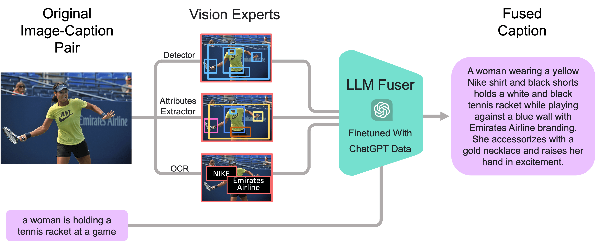
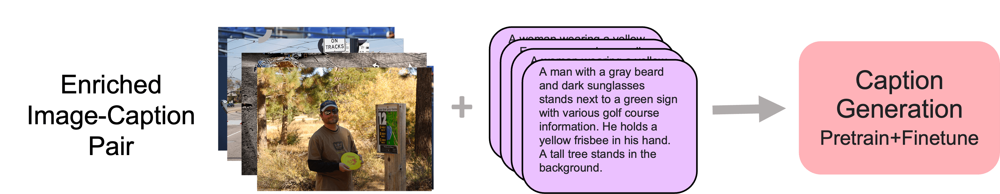

FuseCap
Leveraging Large Language Models to Fuse Visual Data into Enriched Image Captions
Technion - Israel Institute of Technology

Abstract
Image captioning is a central task in computer vision which has experienced substantial progress following the advent of vision-language pre-training techniques. In this paper, we highlight a frequently overlooked limitation of captioning models that often fail to capture semantically significant elements. This drawback can be traced back to the text-image datasets; while their captions typically offer a general depiction of image content, they frequently omit salient details. To mitigate this limitation, we propose FuseCap - a novel method for enriching captions with additional visual information, obtained from vision experts, such as object detectors, attribute recognizers, and Optical Character Recognizers (OCR). Our approach fuses the outputs of such vision experts with the original caption using a large language model (LLM), yielding enriched captions that present a comprehensive image description. We validate the effectiveness of the proposed caption enrichment method through both quantitative and qualitative analysis. Our method is then used to curate the training set of a captioning model based BLIP which surpasses current state-of-the-art approaches in generating accurate and detailed captions while using significantly fewer parameters and training data. As additional contributions, we provide a dataset comprising of 12M image-enriched caption pairs and show that the proposed method largely improves image-text retrieval.
Captioning Examples
Method
Our two-stage framework illustration. In the first stage – we enrich existing image captions using the proposed FuseCap strategy. Visual experts extract meaningful information from images, which is fused with the original captions by an LLM Fuser into rich captions. In the second stage, image datasets, coupled with the enriched captions from the first stage, are utilized to pre-train and fine-tune a comprehensive image-captioning model.

First Stage: Fusing Enriched Captions
Second Stage: Training a Captioning model
FuseCap Dataset Examples
Results
Our captioning model surpasses the performance of leading state-of-the-art captioning models on the COCO dataset in terms of CLIPScore.
BibTeX
@article{rotstein2023fusecap,
title={FuseCap: Leveraging Large Language Models to Fuse Visual Data into Enriched Image Captions},
author={Rotstein, Noam and Bensaid, David and Brody, Shaked and Ganz, Roy and Kimmel, Ron},
journal={arXiv preprint arXiv:2305.17718},
year={2023}
}